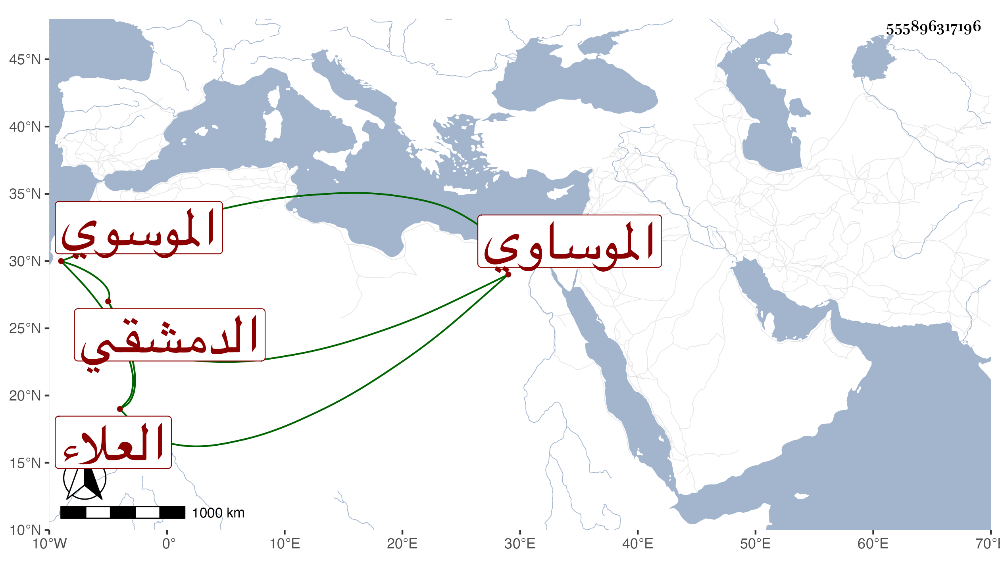

0902Sakhawi.DawLamic.ITO20230111-ara1.EIS1600.555896317196
Biography ID: 555896317196
794
علي بن عبد الرحمن بن أحمد بن يوسف العلاء الموسوي أو الموساوي الدمشقي أحد المنقطعين بها ويعرف بابن عراق . ولد سنة إحدى عشرة وثمانمائة أو قبلها وقد رأيت من قال أنه حضر على عائشة ابنة ابن عبد الهادي في الثالثة سنة إحدى عشرة وثمانمائة الصحيح بفوتين . ومات إما في سنة ست وتسعين أو قبلها بعد أن أخذ عنه بعض الطلبة .
